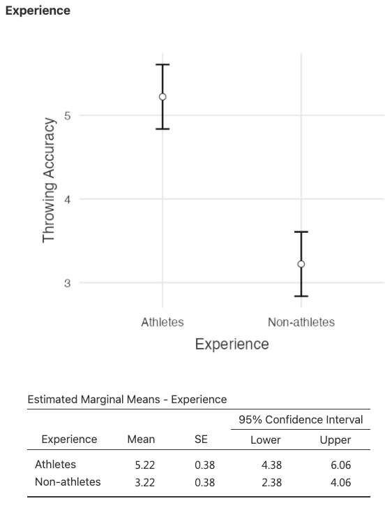

Between-Between Two-Way ANOVA
Objectives
- understand when and why to conduct a F-ANOVA
- understand main and interaction effects
- run the Between-Between Two-Away ANOVA in
jamoviand interpret the results - calculate the effect size for the F-ANOVA
When to use it?
When we discussed analysis of variance (One-Way ANOVA and Repeated-Measures ANOVA), we assumed a fairly simple experimental design. Each person is in one of several groups and we want to know whether these groups have different mean scores on some outcome variable.
In this lessons, I’ll discuss a broader class of experimental designs known as factorial designs, in which we have more than one independent variable (also known as Two-Way ANOVA).
Previously we were dealing with one single dependent variable and one single independent variable (2 or 3+ levels). But what if you have more than one IV/grouping variable? Factorial ANOVA is used in instances when there is more than one “factor” of interest; i.e., treatment & sex. The goal is to know the simultaneously effects of several FACTORS on the dependent variable. Thus, from now on, I will refer to it as F-ANOVA.
F-ANOVA variations
There are different variations of the procedure called F-ANOVA. The type depends on whether the independent variables involve between- or within-group analyses.
The Between-Between F-ANOVA looks at the effect that two between-subjects independent variables have on the dependent variable.
Between- each of the groups in factor A and factor B consists of different subjects randomly assigned to the groups.
The Between-Within F-ANOVA (mixed-design/split-plot) tests the effect of one within-subjects and one between-subject independent variable on the dependent variable.
Between- each of the groups in factor A consists of different subjects randomly assigned to the groups
Within- subjects in each of the groups are measured two or more times; or complete two or more conditions.
And finally, in the case of the Within-Within F-ANOVA, one looks at the effect of two within-subjects independent variables on a dependent variable.
Same subjects perform on different modes (two or more) of exercise (factor A-within), and over two or more different stages of work (factor B-within).
When we refer to between, each of the groups in factor A consists of different subjects randomly assigned to the groups, whereas the term within refers to a case where subjects in are measured two or more times (or go through two or more conditions).
In this lesson, I will limit the discussion to the Between-Between F-ANOVA. For an example on the Between-Within F-ANOVA click here…
Interaction and Main effects
An Interaction Effect occurs when the effect of one IV depends on the level of another IV.
A Main Effect is the effect of an independent variable on a dependent variable averaged across the levels of any other independent variables.


Variables
Independent variables
Two or more quantitative (interval or ratio) variables.
Dependent variable
One quantitative of interval or ratio level variable.
Stating the Hypotheses
Null hypothesis
Factor A
H_0:\mu_1 = \mu_2 =, \ldots = \mu_K - There is no difference in the means of factor A
Factor B
H_0:\mu_1 = \mu_2 =, \ldots = \mu_K - There is no difference in the means of factor B
Interaction
H_0: There is no interaction between factors A and B
Alternative hypothesis
Factor A
H_a:\mu_1 \neq \mu_2 \neq, \ldots \neq \mu_K - The means are not equal
Factor B
H_a:\mu_1 \neq \mu_2 \neq, \ldots \neq \mu_K - The means are not equal
Interaction1
H_a: There is an interaction between factors A and B
Assumptions2
- Independence. You should have independence of observations, which means that there is no relationship between the observations in each group or between the groups themselves.
- Outliers. There should be no extreme outliers.
- Check this assumption by creating and interpreting boxplots
- Normality. The dependent variable should be approximately normally distributed for each combination of the groups of the two independent variables.
- Check this assumption by running the Shapiro-Wilk test and calculating z-kurt and z-skew. In addition, create and interpret the QQ Plots and Histograms.
- Homogeneity of variance. There needs to be homogeneity of variances for each combination of the groups of the two independent variables.
- Check this assumption by running and interpreting the results of the Levene’s test
Test statistic
F test for the overall test. Refer to the One-Way ANOVA test.
t test for pairwise comparisons with correction for family-wise error rate.
Sampling distributions
Refer to the sampling distributions of the F test (One-Way ANOVA) and the t test (Independent-Samples t test).
Significance
Refer to the steps used for the F test (One-Way ANOVA) and the t test (Independent-Samples t test).
Confidence Intervals
Refer to the One-Way ANOVA for the overall test and t-test for the post hoc tests.
Effect size
The most popular measure of effect size for F-ANOVA is the partial eta-squared ( \eta^2). The idea behind the \eta^2 is that, when measuring the effect size for a particular term (say, the main effect of Factor A), you want to deliberately ignore the other effects in the model (e.g., the main effect of Factor B).
That is, you would pretend that the effect of all these other terms is zero, and then calculate what the \eta^2-value would have been. This is actually pretty easy to calculate. All you have to do is remove the sum of squares associated with the other terms from the denominator. In other words, if you want the partial η² for the main effect of Factor A, the denominator is just the sum of the SS values for Factor A and the residuals.[1]
Example
Data set
You can download either the jamovi template or the data set as csv for this example. Then proceed to open the file with jamovi. The data set comes from Weir and Vincent (2021)[2].
In this design, the researcher wanted to study the effect of 1 day, 3 days, or 5 days of practice per week (20 minutes per day) on the learning of a novel task of nondominant arm throwing accuracy (the dependent variable). In addition, the researcher wanted to know whether subjects with athletic experience (college-level varsity athletes) benefit differently from the various practice conditions than do college students with no experience in athletic competition.[2(p. 181)]
Because in the example above the researcher wants to test the effect of two independent variables (factors) on a single dependent variable and both factors are between-subjects, we need to use the Between-Between F-ANOVA. This is an example of 3 (practice conditions) x 2 (athletic experience) with equal number of participants in each group (balanced design).
Three subjects in each group were then randomly assigned to one of the three practice conditions (1, 3, or 5 days of practice per week for 20 minutes per day). Number of days of practice was identified as factor B. Subjects’ scores on the throwing task at the end of 6 weeks were recorded as the dependent variable. The scores ranged from 1 to 10 (10 = high).[2(p. 181)]
Step 1: Set up hypotheses and determine the level of significance
Assume that Factor A refers to Experience and Factor B refers to Practice. Each of the H_0 below will be tested at alpha = 0.05.
Null hypothesis
Factor A
H_0:\mu_1 = \mu_2 - There is no difference in the means of factor A
Factor B
H_0:\mu_1 = \mu_2 = \mu_3 - There is no difference in the means of factor B
Interaction
H_0: There is no interaction between factors A and B
Alternative hypothesis
Factor A
H_a:\bar{x}_1 \neq \bar{x}_2 - The means are not equal
Factor B
H_a:\bar{x}_1 \neq \bar{x}_2 \neq \bar{x}_3 - The means are not equal
Interaction3
H_a: There is an interaction between factors A and B
Step 2: Select the appropriate test statistic
Between-Between F-ANOVA
- comparing means
- two IVs and one DV
- the IVs are independent groups (between-subjects)
Step 3: Set the decision rule
Factor A: Reject H_0 is p-value is less than 0.05
Factor B: Reject H_0 is p-value is less than 0.05
Interaction: Reject H_0 is p-value is less than 0.05
Step 4: Compute the test statistic
Set up
In jamovi, choose Analyses > ANOVA > ANOVA. Then, move Throwing Accuracy to the Dependent Variable box. Finally, move Experience and Practice to the Fixed Factors box.
Because we have more that one factor, we want to use the partial eta-squared (\eta^2) as a measure of effect size. Simply check the box Partial \eta^2 under Effect Size.


Checking the assumptions
Before we interpret the ANOVA table (see Figure 2), we need to check if all assumptions have been met.
- Independence. In their description of the study, the authors mentioned that participants were randomly assigned to different groups; this assumption has been met.
- Outliers: Create boxplots for each factor. In jamovi, choose
Exploration>Descriptive Statistics. Based on the boxplots below, there is no evidence of extreme outliers; thus, we will assume that this assumption has been met.


- Normality. Upon looking the results of the Shapiro-Wilk test, we conclude that this assumption has been met (p > 0.05). However, others would argue the need to check normality for each combination of the groups of the two independent variables.
- Homogeneity of variance. There needs to be homogeneity of variances for each combination of the groups of the two independent variables. According to the Levene’s test, this assumption has been met (p > 0.05).

Step 5: Conclusion - make a decision to whether reject or retain the null hypotheses

Main effect for Experience
By looking at the table above, and conclude that there is a Main Effect for factor A (Experience), F(12, 1) = 13.50, p = .003. This indicates that for all three levels of factor B combined, athletes scored significantly better than non-athletes (see Figure 3).

Main effect for Practice
There was also a main effect for factor B (Practice), F(12, 2) = 30.29, p < .001. This indicates that for both levels of A combined, a significant difference exists somewhere among the three levels of B. By looking at

Interaction effect
Finally, there was an interaction effect; F(12, 2) = 4.62, p = .032. This indicates that the effect of practice on throwing accuracy differ in athletes and non-athletes. Figure 5 below suggests that the effect of more days of practice on throwing accuracy is larger in the athletes than in the non-athletes. The significant F for the interaction tells us that the lines in Figure 5 are not statistically parallel.
Although I present the results for both main effects above, arguably, “we must be cautious interpreting the main effects”[2(p. 184)]. This is because the Interaction Effect was significant. In fact, some would suggest[3] to skip the interpretation of the Main Effects if the Interaction effect is significant as it could be misleading.
Use a step-down process to interpret the results. This means you should evaluate the main effects and interaction, and only proceed to further analysis (post hoc tests) if there is significance.
A significant interaction tells us that the effects of factor A differs across levels of factor B (and vice-versa).
The significant F (F = 4.63, p = .03) for the interaction tells us that the effects of practice on throwing accuracy differ in athletes and nonathletes.
We could stop the interaction interpretation right here and simply note that the significant interaction indicates that athletes improve more with more practice than do non-athletes. However, we are often interested is delineating the specific mean differences in the cell means.
We can do this performing simple effects tests; see table below.
Simple effects for A (Experience)
F across A at B1 > p = .730
F across A at B2 > p = .008
F across A at B3 > p = .004


Post Hoc tests
Because Practice has more than two levels, we need to perform further analysis by running post hoc tests for the Factor Practice as well as for the Interaction.
Post hoc tests for Practice

Estimated Marginal Means